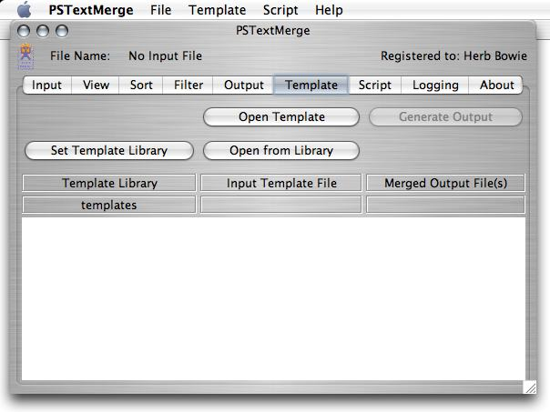

Products | PSTextMerge | Operating Guide
PSTextMerge Template Tab
This tab allows the user to merge the currently loaded data into a template file, producing one or more output text files. The greatest anticipated use for this function is to create Web pages, based on input template files containing a mixture of HTML tags and special PSTextMerge tags. This allows tab-delimited data to be periodically merged into an HTML template that determines the format in which the data will be displayed on a Web site.
Buttons
This screen contains the following buttons.
Set Template Library
PSTextMerge supports the concept of a central template library where you can store reusable templates. The initial location for this folder is the "templates" folder within the PSTextMerge Folder that comes as part of the software distribution. However, this button can be used to allow you to select another folder as your template library. After installation of PSTextMerge, you may wish to copy the templates folder to another location, perhaps within your home folder, or your documents folder, and then use this button to specify that new location.
Open Template
This button allows you to specify the location and name of the template file you wish to use. (This file must have previously been created using a text editor.) This function may also be invoked via the Template/Open Menu item or with the T shortcut key.
Open From Library
This button also opens a template file, but uses your template library as the starting location.
Generate Output
This button processes the template file you have selected, and creates whatever output file(s) you have specified in the template file. The function may also be invoked via the Template/Generate Menu item or with the G shortcut key.
Template File Format
The rest of this section describes the contents of the template file itself. This program will look for two sorts of special strings embedded within the template file: variables and commands. Finally, we will provide some examples of template files.
Delimiters
Beginning with version 3.0, PSTextMerge will recognize either of two sets of command and variable delimiters automatically. The choice of delimiters will be triggered by the first command beginning delimiters encountered. The new delimiters are generally recommended, since they are more likely to be treated kindly by various HTML editors on the market when you are editing your template files.
| Meaning | Original Delimiters | New Delimiters |
|---|---|---|
| Start of Command | << | <? |
| End of Command | >> | ?> |
| Start of Variable | << | =$ |
| End of Variable | >> | $= |
| Start of Variable Modifiers | & | & |
Variables
Variables will be replaced by values taken from the corresponding columns of the current data record, or from an internal table of global variables. Variables must be enclosed in the chosen delimiters. Each variable name must match a column heading from the data file, or a global name specified in a SET command. The comparison ignores case (upper or lower), embedded spaces and embedded punctuation when looking for a matching column heading. So a column heading of "First Name" will match with a variable of "firstname", for example.
A variable, unlike a command, can appear anywhere within the template file, and need not be isolated on a line by itself. More than one variable can appear on the same line. Variables can be used within PSTextMerge commands, as well as other places within the template file.
The following special variables are predefined and available for substitution, no matter what data source is being used.
- datafilename
- The name of the data source being used.
- dataparent
- The path to the enclosing folder for the current data file. This can be used as part of an output command to specify an output file in the same folder as the data file.
- templatefilename
- The name of the template file itself
- today
- The current date, at the time that template output is being generated.
Variable Modifiers
A variable can be optionally followed (within the less than/greater than signs) by a modifier indicator and one or more modifiers. The default modifier character is the ampersand (&).
Case Modifiers "U" or "L"
The letters "U" or "L" (in either upper- or lower-case) will indicate that the variable is to be converted, respectively, to upper- or lower-case. If the letter "i" is also supplied (again in either upper- or lower-case), then only the first character of the variable value will be converted to the requested case. (The letter "i" stands for "initial".)
XML Modifier "X"
The letter "X" will cause selected special characters to be translated to their equivalent XML entities. This is recommended, for example, when publishing an RSS (Really Simple Syndication) feed.
Base File Modifier "B"
The letter "B" will cause the file extension, including the period, to be removed from a file name. This can be used, for example, to generate an output file name with the same name as the input data file (using the variable name "datafilename"), but with a different extension.
Keep Characters on the Right Modifier "R"
The letter "R", in combination with a length modifier (see below), will cause the variable to be truncated to the given length, truncating characters on the left and keeping characters on the right.
Length Modifier
One or more digits following the modifier indicator will be interpreted as the length to which the variable should be truncated or padded. If the length modifier is shorter than the variable length, then by default characters will be truncated on the right (and preserved on the left) of the variable to bring it to the specified length (if it is desired to keep characters on the right, then also use the "R" modifier, described above). If the length modifier is longer than the initial variable length, then the variable will be padded with zeroes on the left to bring it to the specified length.
Underscore Modifier
An underscore character ("_") following the modifier indicator will cause all spaces in the variable to be replaced by underscores. This can be useful when creating a file name, for example.
Punctuation Modifier
Any punctuation character other than an underscore following the modifier indicator will be interpreted as a separator that will be placed before the current variable, if the variable is non-blank, and if the preceding variable was also non-blank and also marked by a similar variable modifier. A space will be added after the separator, and before the current variable, if the punctuation is not a forwards or backwards slash ("/" or "\"). This is an easy way to list several variables on a single line, separating non-blank ones from others with commas (or other punctuation).
Word Demarcation Modifier
If a variable may be interpreted as a series of "words," with the words delimited by white space, punctuation, or transitions from lower to upper case ("two words", "TWO_WORDS" or "twoWords"), then these variable modifiers may be used to change the way in which the words are delimited.
| Letter | Meaning |
|---|---|
| c | This letter must begin the string, to indicate that modified word demarcation is desired. This should be followed by three letters, each with one of the following values. The first occurrence indicates what should be done with the first letter of the variable; the second occurrence indicates what should be done with the first letter of all other words; the third occurrence indicates what should be done with all other letters in the variable. |
| u | This letter indicates that upper-case is desired. |
| l | This letter indicates that lower-case is desired. |
| a | This letter indicates that the case should be left as-is. |
For example, if the template file contained the following:
=$name&cuul$=
And the name variable was equal to:
HERB BOWIE
Then the resulting name in the output text file would be:
Herb Bowie
Formatting String
A string of characters indicating how the variable is to be formatted. The formatting string, if specified, should follow any other variable modifiers. Any character other than those listed above will cause the remainder of the variable modifiers to be treated as a formatting string. Currently, a formatting string is valid only for dates — either for the special variable today, or for any variable date in "mm/dd/yy" format.
A date formatting string follows the normal rules for Java date formatting. One or more occurrences of an upper-case "M" indicates a month, a lower-case "y" is used for a year, and a lower-case "d" is used for the day of the month. An upper-case "E" can be used for the day of the week. Generally, the number of occurrences of each letter you specify will be used to indicate the width of the field you want ("yyyy" for a 4-digit year, for example). Specifying more than two occurrences of "M" indicates you want the month represented by letters rather than numbers, with 4 or more occurrences indicating you want the month spelled out, and 3 occurrences indicating you want a three-letter abbreviation.
See below for full definition of allowable characters and their meanings.
To specify the time format use a time pattern string. In this pattern, all ASCII letters are reserved as pattern letters, which are defined as the following:
Symbol Meaning Presentation Example ------ ------- ------------ ------- G era designator (Text) AD y year (Number) 1996 M month in year (Text & Number) July & 07 d day in month (Number) 10 h hour in am/pm (1~12) (Number) 12 H hour in day (0~23) (Number) 0 m minute in hour (Number) 30 s second in minute (Number) 55 S millisecond (Number) 978 E day in week (Text) Tuesday D day in year (Number) 189 F day of week in month (Number) 2 (2nd Wed in July) w week in year (Number) 27 W week in month (Number) 2 a am/pm marker (Text) PM k hour in day (1~24) (Number) 24 K hour in am/pm (0~11) (Number) 0 z time zone (Text) Pacific Standard Time ' escape for text (Delimiter) '' single quote (Literal) '
The count of pattern letters determine the format.
(Text): 4 or more pattern letters--use full form, < 4--use short or abbreviated form if one exists.
(Number): the minimum number of digits. Shorter numbers are zero-padded to this amount. Year is handled specially; that is, if the count of 'y' is 2, the Year will be truncated to 2 digits.
(Text & Number): 3 or over, use text, otherwise use number.
Any characters in the pattern that are not in the ranges of ['a'..'z'] and ['A'..'Z'] will be treated as quoted text. For instance, characters like ':', '.', ' ', '#' and '@' will appear in the resulting time text even they are not embraced within single quotes.
Commands
All commands must be enclosed in the chosen delimiters. In addition, all commands must appear on lines by themselves. Command names can be in upper- or lower-case. Each command may have zero or more operands. Operands may be separated by any of the following delimiters: space, comma (','), semi-colon (';') or colon (':'). Operands that contain any of these delimiters must be enclosed in single or double-quotation marks.
The following commands are recognized. They are presented in the typical sequence in which they would be used.
<?delims new delimiters?>
If used at all, this command should be the first command in the template file. This command overrides the standard delimiters used to recognize the beginnings and ends of commands and variables, for the remainder of the current template file. The command can have one to five operands. Each operand will become a new delimiter. They should be specified in the following order.
- beginning of a command (normally paired less than signs)
- the end of a command (normally paired greater than signs)
- the beginning of a variable (normally paired less than signs)
- the end of a variable (normally paired greater than signs)
- the beginning of variable modifiers (normally a single ampersand)
Note that, when using this command, this command itself must use the standard delimiters. The new delimiters should only begin to be used on following lines.
<?output filename.ext?>
This command names and opens the output file. The single operand is the name of the output file. filename.ext should be the desired name of your output file. This command would normally be the first line in your template file. Subsequent template records will be written to the output file. Note, however, that the filename can contain a variable name. In this case, the output command would immediately follow the nextrec command, and a new output file would be opened for each tab-delimited data record.
<?set global = 0?>
This command can define a global variable and set its value. This command would normally have three operands: the name of the global variable, an operator, and a value.
- Global variable name. This should not be the same as the name of any variable name specified by the input data file. The global variable name, when used as the object of a SET command, should not be enclosed within the normal variable delimiters, since this would cause the variable name to be replaced by its current value.
- Operator. Any of the following operators can be used.
- =
- This will cause the global variable to be set equal to the following value.
- += or simply +
- This will cause the value to be added to the current value of the global variable.
- ++
- This can be used to add a value of 1 to the current value of the global variable, without having to specify the following value of 1. (In this case, the SET command only takes two operands.)
- -= or simply -
- This will cause the value to be subtracted from the current value of the global variable.
- --
- This can be used to subtract a value of 1 from the current value of the global variable, without having to specify the following value of 1. (In this case, the SET command only requires two operands.)
- Value. This can be a literal or a variable (in which case it should be surrounded by the normal variable delimiters). The value can be a text string or an integer.
One intended use for the SET command is to support a line counter. By initializing the value to 0, and then adding to it whenever an output line is generated, the IF command can be used to check for page overflow (in a table column, for example), and then start a new page or column, resetting the counter to 0 again.
Another common use for the SET command is to preserve record variables in global variables so that they will be available within an IFENDGROUP block.
<?nextrec?>
This command indicates the beginning of the code that will be written out once per data record. Lines prior to the nextrec command will only be written out once.
<?include filename.ext?>
This command allows you to include text from another file into the output stream being generated by the template. The included text is not processed in any way, but is simply copied to the output file being generated. The output filename may include variables, allowing you to tailor the included content based on one or more fields from your input data source. This is especially useful when you would like to include output from another template in the output generated by this template (effectively combining outputs from two separate templates into a single output). If an include file is not found, then it will simply be skipped and processing will continue, with a log message to note the event.
<?ifchange =$variable$=?>
The ifchange command can be used to test a variable to see if it has a different value than it did on the last data record. If the variable has changed, then the following lines up to the closing endif command will be subjected to normal output processing. If the variable has not changed, then following lines will be skipped until the closing endif command is encountered. This command can be used to generate some special header information whenever a key field changes. Note that only one variable can be used with ifchange commands in one template file, since the value of any ifchange command is simply compared to the variable for the last ifchange command encountered.
<?if =$variable$=?>
The if command can be used to test a variable to see if it is non-blank. If the variable is non-blank, then the following lines up to the closing endif command will be subject to normal output processing. If the variable is blank, then following lines will be skipped until the closing endif command is encountered. In this case, the first and only operand would be the variable to be tested.
The if command can also be used to test a variable to compare it to one or more constants. In this case, the command would have three or more operands: the name of the variable, a logical operator, and one or more values.
- Variable Name. This can be a variable from the input data file, or a global variable (see the SET command above).
- Logical Operator. Any of the following operators can be used.
- = or ==
- This will return true if the variable is equal to any of the specified values.
- >
- This will return true if the variable is greater than the value.
- <
- This will return true if the variable is less than the value.
- >= or !<
- This will return true if the variable is greater than or equal to the value.
- <= or !>
- This will return true if the variable is less than or equal to the value.
- Value. This can be a literal or a variable. The value can be a text string or an integer.
<?definegroup group-number =$variable$=?>
This is the first of five commands that define key fields and then conditionally write output when there is a break on any of those fields. Up to ten group break fields can be defined. Each must be assigned a number from 1 to 10. Numbers should be assigned sequentially beginning with 1. Input data should normally be sorted by the same fields used in any definegroup commands. Definegroup commands should precede ifendgroup and ifnewgroup commands, and should generally be specified in ascending order by group number. The definegroup command has two operands.
- Group Number. This must be a number from 1 to 10. Numbers should be assigned sequentially beginning with 1. Lower-numbered groups are considered more major than higher-numbered groups, in the sense that lower-numbered group breaks will automatically trigger higher-numbered group breaks.
- Variable Name. This is the name of the key field variable.
<?ifendgroup group-number?>
This is the second of the five group commands. Lines following this command and preceding the next group or endif command will be written to the output file at the end of a group of records sharing a common value for this key field. Ifendgroup commands should follow definegroup commands and precede ifnewgroup commands, and should generally be specified in descending order by group number. The ifendgroup command has one operand.
- Group Number. The group number whose group-ending output lines follow.
Note that references to record variables within an IFENDGROUP block will retrieve the data from the record causing the break (i.e., the first record in the new group), not the last record in the group just ended. Use the SET command to save data in global variables if you need to later access it when a group break has been detected.
<?ifendlist group-number?>
This is the third of the five group commands. Lines following this command and preceding the next group or endif command will be written to the output file at the end of a list of records containing this key field. The end of a list will be triggered by a change in key values at the next higher level, or by a record containing blanks at the current group level. Ifendlist commands should follow ifendgroup commands and precede ifnewlist commands, and should generally be specified in descending order by group number. The ifendlist command has one operand. Note that the ifendlist and ifnewlist commands can generally be used to insert HTML tags to end a list and begin a list.
- Group Number. The group number whose list-ending output lines follow.
Note that references to record variables within an IFENDLIST block will retrieve the data from the record causing the break (i.e., the first record in the new group), not the last record in the group just ended. Use the SET command to save data in global variables if you need to later access it when a list break has been detected. Note that the ifendlist and ifnewlist commands can generally be used to insert HTML tags to end a list and begin a list.
<?ifnewlist group-number?>
This is the fourth of the five group commands. Lines following this command and preceding the next group or endif command will be written to the output file at the beginning of a new list of records at this group level. Ifnewlist commands should follow definegroup, ifendgroup and ifendlist commands, should precede ifnewgroup commands, and should generally be specified in ascending order by group number. The ifnewlist command has one operand.
- Group Number. The group number whose list-beginning output lines follow.
<?ifnewgroup group-number?>
This is the fifth of the five group commands. Lines following this command and preceding the next group or endif command will be written to the output file at the beginning of a group of records sharing a common value for this key field. Ifnewgroup commands should follow all other group commands, and should generally be specified in ascending order by group number. The ifnewgroup command has one operand.
- Group Number. The group number whose group-beginning output lines follow.
<?endif?>
The endif command terminates the scope of its corresponding if, ifchange, ifendgroup or ifnewgroup command.
<?loop?>
This command indicates the end of the code that will be written out once per data record. Lines after the loop command will be written out once per output file created, at the end of each file.
Continue with Script Tab.
| Home | Downloads | Store | Support | Products |
|
Copyright © 1999-2007 Herb Bowie • All rights reserved • E-mail:
http://www.powersurgepub.com/ • template.html • Revised: 5/19/07